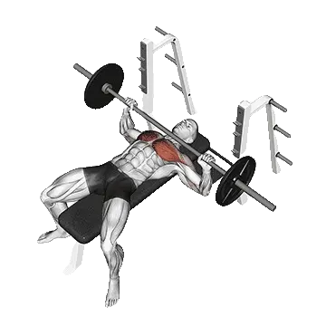

Développé couché prise large
Développé couché prise large permet de consulter la charge moyenne et les standards de force comme repères pour pectoraux. Les muscles principaux sont Grand pectoral.

Poids moyen : Intermédiaire
Repère pour une personne de niveau intermédiaire.
Hommes
211 lb
Femmes
115 lb
Poids moyen de Développé couché prise large [1RM]
| Niveau | ||
|---|---|---|
| Débutant | 100 lb | 38 lb |
| Novice | 149 lb | 71 lb |
| Intermédiaire | 211 lb | 115 lb |
| Avancé | 284 lb | 170 lb |
| Élite | 364 lb | 232 lb |
Note : ces standards sont des estimations de 1RM basées sur des pratiquants moyens. Ils peuvent varier selon le poids de corps, l'âge et d'autres facteurs personnels. Consulte les données détaillées dans le tableau ci-dessous.
Standards de force de Développé couché prise large (lb)
Hommes par poids de corps (lb) [1RM]
| Poids de corps | Débutant | Novice | Intermédiaire | Avancé | Élite |
|---|---|---|---|---|---|
| 110 | 53 | 84 | 125 | 174 | 228 |
| 120 | 63 | 96 | 140 | 191 | 248 |
| 130 | 72 | 108 | 154 | 208 | 266 |
| 140 | 82 | 120 | 168 | 224 | 285 |
| 150 | 91 | 131 | 181 | 239 | 302 |
| 160 | 101 | 143 | 194 | 254 | 319 |
| 170 | 110 | 153 | 207 | 269 | 335 |
| 180 | 119 | 164 | 219 | 282 | 350 |
| 190 | 128 | 174 | 231 | 296 | 365 |
| 200 | 136 | 184 | 243 | 309 | 380 |
| 210 | 145 | 194 | 254 | 322 | 394 |
| 220 | 153 | 204 | 265 | 334 | 408 |
| 230 | 161 | 213 | 276 | 346 | 421 |
| 240 | 169 | 223 | 286 | 358 | 434 |
| 250 | 177 | 232 | 297 | 370 | 447 |
| 260 | 185 | 241 | 307 | 381 | 459 |
| 270 | 193 | 249 | 317 | 392 | 471 |
| 280 | 200 | 258 | 326 | 402 | 483 |
| 290 | 208 | 266 | 335 | 413 | 494 |
| 300 | 215 | 274 | 345 | 423 | 505 |
| 310 | 222 | 282 | 354 | 433 | 516 |
Hommes par âge [1RM]
| Âge | Débutant | Novice | Intermédiaire | Avancé | Élite |
|---|---|---|---|---|---|
| 15 | 85 | 127 | 180 | 242 | 310 |
| 20 | 97 | 145 | 206 | 277 | 354 |
| 25 | 100 | 149 | 211 | 284 | 364 |
| 30 | 100 | 149 | 211 | 284 | 364 |
| 35 | 100 | 149 | 211 | 284 | 364 |
| 40 | 100 | 149 | 211 | 284 | 364 |
| 45 | 95 | 141 | 200 | 269 | 345 |
| 50 | 89 | 133 | 188 | 253 | 324 |
| 55 | 82 | 123 | 174 | 234 | 299 |
| 60 | 75 | 112 | 159 | 213 | 273 |
| 65 | 68 | 101 | 143 | 193 | 247 |
| 70 | 61 | 91 | 129 | 173 | 222 |
| 75 | 54 | 81 | 115 | 155 | 198 |
| 80 | 49 | 73 | 103 | 138 | 177 |
| 85 | 44 | 65 | 92 | 124 | 159 |
| 90 | 39 | 59 | 83 | 112 | 143 |
Femmes par poids de corps (lb) [1RM]
| Poids de corps | Débutant | Novice | Intermédiaire | Avancé | Élite |
|---|---|---|---|---|---|
| 90 | 19 | 41 | 74 | 116 | 165 |
| 100 | 23 | 47 | 82 | 126 | 177 |
| 110 | 27 | 53 | 90 | 136 | 188 |
| 120 | 31 | 59 | 97 | 144 | 199 |
| 130 | 35 | 64 | 104 | 153 | 208 |
| 140 | 39 | 69 | 110 | 161 | 218 |
| 150 | 43 | 74 | 117 | 168 | 227 |
| 160 | 47 | 79 | 123 | 176 | 235 |
| 170 | 50 | 84 | 129 | 183 | 243 |
| 180 | 54 | 89 | 134 | 189 | 251 |
| 190 | 57 | 93 | 140 | 196 | 258 |
| 200 | 61 | 97 | 145 | 202 | 266 |
| 210 | 64 | 101 | 150 | 208 | 272 |
| 220 | 67 | 106 | 155 | 214 | 279 |
| 230 | 70 | 110 | 160 | 220 | 286 |
| 240 | 73 | 113 | 165 | 225 | 292 |
| 250 | 77 | 117 | 169 | 230 | 298 |
| 260 | 80 | 121 | 173 | 236 | 304 |
Femmes par âge [1RM]
| Âge | Débutant | Novice | Intermédiaire | Avancé | Élite |
|---|---|---|---|---|---|
| 15 | 33 | 60 | 98 | 144 | 197 |
| 20 | 37 | 69 | 112 | 165 | 226 |
| 25 | 38 | 71 | 115 | 170 | 232 |
| 30 | 38 | 71 | 115 | 170 | 232 |
| 35 | 38 | 71 | 115 | 170 | 232 |
| 40 | 38 | 71 | 115 | 170 | 232 |
| 45 | 36 | 67 | 109 | 161 | 220 |
| 50 | 34 | 63 | 102 | 151 | 207 |
| 55 | 32 | 58 | 95 | 140 | 191 |
| 60 | 29 | 53 | 86 | 127 | 174 |
| 65 | 26 | 48 | 78 | 115 | 158 |
| 70 | 23 | 43 | 70 | 103 | 141 |
| 75 | 21 | 38 | 63 | 92 | 126 |
| 80 | 19 | 34 | 56 | 83 | 113 |
| 85 | 17 | 31 | 50 | 74 | 101 |
| 90 | 15 | 28 | 45 | 67 | 91 |
Note : une barre standard de salle de sport pèse généralement 44 lb.
Suivi et analyse dans l'app Shiba
Consultez poids, répétitions et progression au même endroit.
Comment lire le tableau
| Niveau | Description | Répartition |
|---|---|---|
| Débutant | Maîtrise la bonne technique et s'entraîne régulièrement depuis au moins 1 mois. | Bas 5% |
| Novice | S'entraîne régulièrement depuis au moins 6 mois. | Top 80% |
| Intermédiaire | S'entraîne régulièrement depuis au moins 2 ans. | Top 50% |
| Avancé | S'entraîne régulièrement depuis plus de 5 ans. | Top 20% |
| Élite | S'entraîne spécifiquement sur cet exercice depuis plus de 5 ans. | Top 5% |
Autres exercices
Pectoraux
Pompes décliné
Pectoraux / Poids du corps
Développé incliné prise serrée
Pectoraux
Pompes inclinées
Pectoraux / Poids du corps
Pompes prise serrée
Pectoraux / Poids du corps
Archer pompes
Pectoraux / Poids du corps
Spoto développé
Pectoraux
Développé couché
Pectoraux / BIG3
Développé couché aux haltères
Pectoraux / Haltères
Pompes
Pectoraux / Poids du corps
Développé incliné
Pectoraux
Développé couché incliné aux haltères
Pectoraux / Haltères
Développé couché prise serrée
Pectoraux